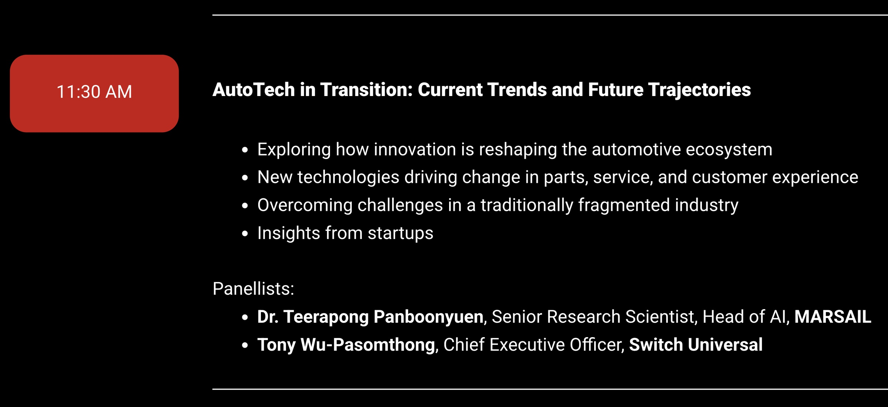
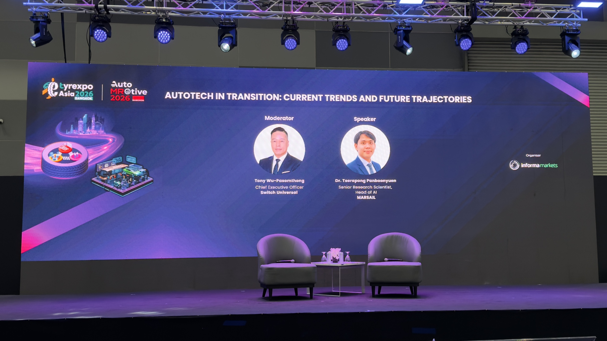
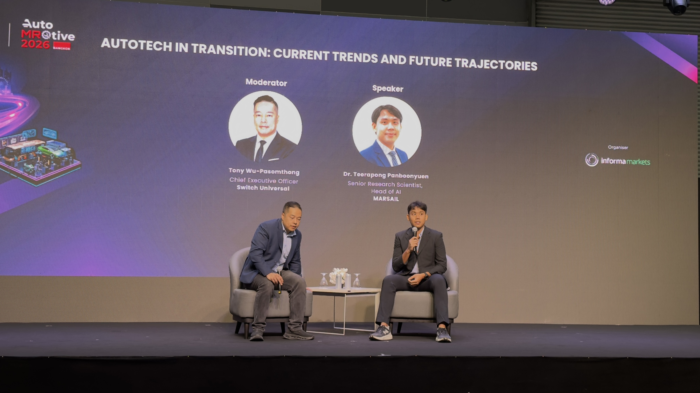
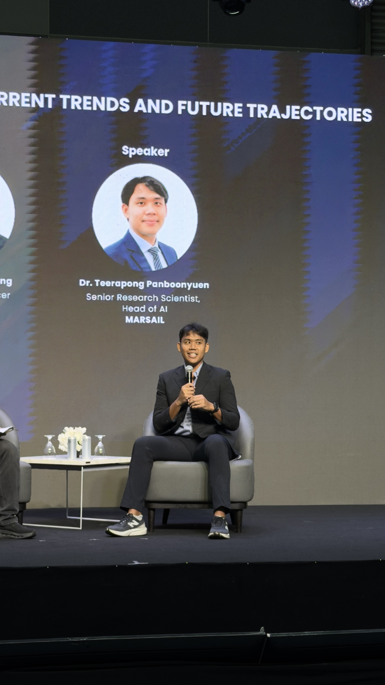
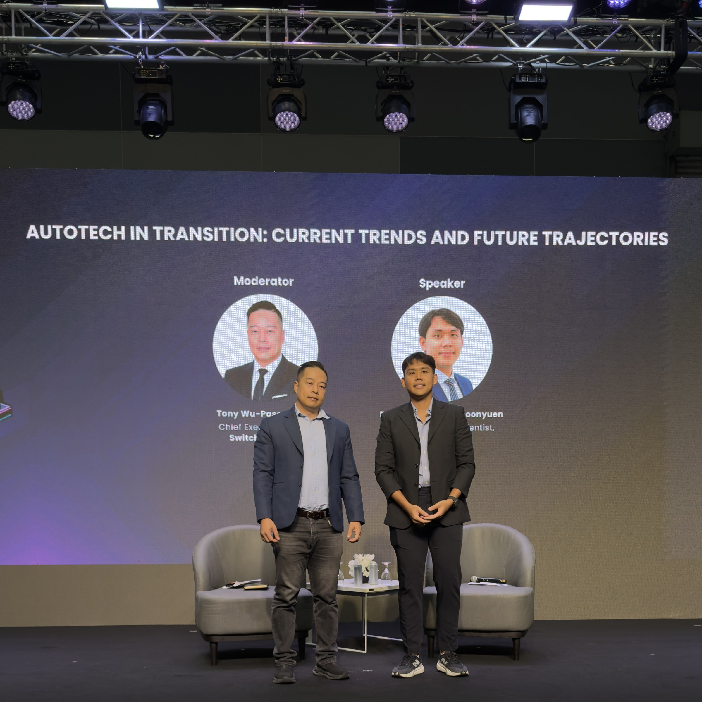

AutoTech Aftermarket Summit 2026 at BITEC Bangkok
AutoTech Aftermarket Summit 2026 at BITEC Bangkok
Abstract
Presented at AutoTech Aftermarket Summit 2026, this session explored how artificial intelligence is reshaping the automotive ecosystem through intelligent automation, computer vision infrastructure, predictive maintenance, scalable AI deployment, and digital operational transformation. Representing MARSAIL (Motor AI Recognition Solution AI Laboratory), the discussion focused on bridging the gap between AI research and real-world automotive operations, emphasizing production-grade AI systems capable of supporting workshop technologies, diagnostics, infrastructure intelligence, and future mobility ecosystems. The presentation highlighted the importance of engineering-driven AI deployment strategies that combine research innovation with operational scalability across modern automotive industries.

Field Report from Bangkok
At AutoTech Aftermarket Summit 2026, hosted at BITEC Bangkok, industry leaders, engineers, researchers, and innovators gathered to discuss the future of automotive technology, intelligent infrastructure, and AI-driven operational systems.
The summit was organized as part of:
- TyreXpo Asia Bangkok 2026
- AutoMROtive 2026
This year’s conference focused heavily on how artificial intelligence is reshaping the automotive aftermarket ecosystem through intelligent diagnostics, predictive maintenance, automation systems, and scalable operational technologies.

At 11:30 AM, I joined the session:
AutoTech in Transition: Current Trends and Future Trajectories
where I participated as:
Dr. Teerapong Panboonyuen
Senior Research Scientist, Head of AI, MARSAIL
The session explored how AI technologies are moving from research environments into production-grade automotive operations capable of supporting large-scale industrial workflows and intelligent service ecosystems.
Bridging AI Research and Automotive Operations
One of the major themes discussed during the session was the growing convergence between AI research, engineering infrastructure, and real-world automotive deployment.
The discussion explored several important areas:
- AI-powered operational transformation in automotive industries
- Intelligent diagnostics and predictive maintenance systems
- Computer vision infrastructure for industrial deployment
- Scalable AI engineering in fragmented operational environments
- Future directions for intelligent automotive systems
- Startup perspectives on sustainable AI innovation
Rather than treating AI as an isolated technology trend, the session emphasized the importance of building deployable systems capable of solving real operational challenges across automotive ecosystems.
AI becomes truly valuable when research, engineering, and deployment converge into systems that solve real operational problems.
The automotive aftermarket industry presents unique challenges involving operational complexity, fragmented infrastructures, and rapidly evolving customer expectations. These conditions create strong opportunities for scalable AI systems capable of improving efficiency, automation, diagnostics, and intelligent decision-making across the industry.
The Rise of Production Automotive AI
Over the past several years, automotive AI has evolved rapidly from experimental prototypes into deployable production systems capable of supporting real operational environments.
At MARSAIL, much of our work focuses on:
- Computer vision systems for automotive intelligence
- Production AI infrastructure
- Scalable deployment pipelines
- Real-world operational AI integration
- Intelligent inspection and recognition systems
The session highlighted how modern automotive AI increasingly requires collaboration between:
- AI researchers
- software engineers
- infrastructure architects
- enterprise technology providers
- mobility companies
- automotive operators
This convergence is accelerating the emergence of intelligent automotive ecosystems where AI systems operate continuously within real industrial workflows rather than isolated research environments.
A Convergence of Industry and Emerging Technologies
One of the most interesting aspects of AutoTech Aftermarket Summit 2026 was observing how traditional automotive industries are beginning to merge with modern AI infrastructure and intelligent software ecosystems.
The conference brought together professionals from:
- OEMs
- automotive service providers
- AI startups
- workshop technology platforms
- infrastructure companies
- fleet operators
- enterprise solution providers
- researchers and engineers
This created an interdisciplinary environment where discussions extended beyond automotive technologies themselves into broader conversations surrounding:
- operational scalability
- infrastructure modernization
- intelligent automation
- mobility innovation
- future industrial ecosystems
The summit reflected a growing realization that the future automotive industry will increasingly depend on intelligent software infrastructure operating alongside physical mobility systems.
Looking Toward the Future of Automotive Intelligence
The transition occurring across the automotive industry is not simply about adding AI features into existing systems.
It represents a larger shift toward intelligent operational ecosystems capable of supporting:
- autonomous diagnostics
- predictive infrastructure maintenance
- intelligent workflow orchestration
- adaptive customer experiences
- large-scale operational optimization
As AI systems continue evolving, the distinction between research systems and production infrastructure is becoming increasingly blurred.
Events such as AutoTech Aftermarket Summit 2026 create valuable opportunities for researchers, engineers, startups, and industry leaders to exchange ideas on how emerging AI technologies can be deployed responsibly and effectively at scale.
Presenting at BITEC Bangkok was more than a technical discussion — it was an opportunity to contribute to a broader conversation about how intelligent systems, AI engineering, and digital infrastructure will shape the next generation of automotive ecosystems.






I would like to sincerely thank Stefanie Tan from Informa Markets Singapore for the invitation and warm hospitality throughout the event. I also deeply appreciate the insightful conversations and engaging discussions shared during the summit, which made the experience both professionally meaningful and personally memorable. It was an honor to contribute perspectives from MARSAIL and exchange ideas with industry leaders, engineers, researchers, and innovators shaping the future of automotive intelligence and operational AI systems.


Overall, AutoTech Aftermarket Summit 2026 at BITEC Bangkok was an inspiring and forward-looking experience that highlighted the growing convergence between artificial intelligence, intelligent infrastructure, and the automotive industry. The summit demonstrated how emerging technologies are transforming operational workflows, mobility ecosystems, customer experiences, and industrial services at scale. I am sincerely grateful to the organizers, speakers, and participants for creating such a collaborative and insightful environment. The event reinforced the importance of bridging AI research with production engineering and real-world deployment while opening valuable conversations about the future trajectory of intelligent automotive systems in Southeast Asia and beyond.
Teerapong Panboonyuen
My research focuses on leveraging advanced machine intelligence techniques, specifically computer vision, to enhance semantic understanding, learning representations, visual recognition, and geospatial data interpretation.